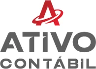
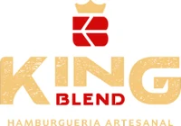
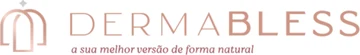
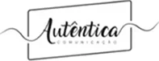
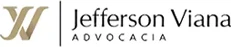

Exclusividade e proteção
- Garante exclusividade da marca em todo o Brasil.
- Protege contra falsificação e possibilita tomar medidas legais contra falsificadores.
Somos especialistas.
Proteja-se contra imitações e o uso indevido de marca agora mesmo fazendo seu registro de marca no INPI.





Fazer registro de marca é uma etapa crucial para resguardar seu empreendimento e prevenir complicações legais futuras. Sem o devido registro, sua marca fica vulnerável, abrindo caminho para litígios legais, perda de investimentos em construção de marca e até mesmo a renúncia de direitos sobre sua própria identidade empresarial.
Ao deixar de registrar sua marca, existe a possibilidade de que outra empresa o faça, impedindo-o de utilizar sua própria identidade comercial. Evite o risco de ter que alterar o nome de sua empresa ou produto após anos de investimento em estratégias de marketing e publicidade.
Somente com o registro de marca em mãos, você terá a certeza de que ninguém poderá fazer uso indevido dela.
O registro de uma marca é a única maneira legal de protegê-la contra possíveis imitadores e a concorrência.
A marca registrada passa a ser um ativo da sua empresa e valoriza o patrimônio do seu negócio.
Aqui verificamos se sua marca está disponível para registro no seu segmento de atuação.
É o início do processo no INPI, onde você passa a ter prioridade sobre o registro da marca.
Acompanhamos todos os movimentos do seu processo durante sua duração.
Receba o certificado de registro da sua marca válido por 10 anos, sem nenhuma burocracia.
Pague um valor único agora e só pague novamente após 10 anos!
Aceitamos e parcelamos em todas as bandeiras de cartão, em até 12x, e também Pix e boleto.
A empresa Sasso Marcas e Patentes é uma referência consolidada em Propriedade Intelectual, com quase uma década de expertise no mercado. Nosso diretor é vice-presidente da Comissão de Propriedade Intelectual da OAB/CE, o que reflete nosso compromisso e conhecimento no segmento.
Com um Master of Laws (LLM) em Direito Empresarial com ênfase em Propriedade Intelectual pela renomada Fundação Getúlio Vargas – FGV, e especialização em Processo Civil, garantimos um serviço de excelência para proteger e valorizar suas marcas e patentes. Conte conosco para uma parceria estratégica que elevará sua empresa a novos patamares de sucesso!
O registro da sua marca garante a exclusividade do seu nome, evitando que terceiros a utilizem indevidamente. Além disso, protege o investimento feito em sua marca e agrega valor ao seu negócio.
Tirar dúvidas no WhatsAppSim, você pode registrar uma marca mesmo sem possuir CNPJ. O registro de marca no Brasil pode ser feito por pessoas físicas ou jurídicas, ou seja, tanto empresas (que possuem CNPJ) quanto indivíduos (que possuem CPF) podem registrar uma marca. Isso é especialmente útil para empreendedores individuais, freelancers ou qualquer pessoa que esteja desenvolvendo um projeto pessoal e queira proteger o nome ou logotipo de sua marca.
Ao registrar uma marca, o titular (seja pessoa física ou jurídica) obtém o direito exclusivo de uso da marca em todo o território nacional, dentro do segmento de mercado em que foi registrada. Esse registro é realizado no Instituto Nacional da Propriedade Industrial (INPI), e o processo envolve a verificação da disponibilidade do nome e a análise da viabilidade do registro.
O custo para registrar uma marca no Brasil pode variar dependendo de alguns fatores, como o tipo de solicitante (pessoa física, microempreendedor individual, microempresa, empresa de pequeno porte ou empresa de grande porte) e o número de classes de produtos ou serviços em que a marca será registrada.
O pagamento das taxas do INPI pode ser feito via Guia de Recolhimento da União (GRU), que é gerada diretamente no site do INPI após o preenchimento do pedido de registro. Essa GRU pode ser paga em qualquer banco, lotérica ou pela internet, utilizando serviços de internet banking.
Na Sasso Marcas e Patentes, oferecemos mais flexibilidade, permitindo que os clientes paguem em até 12 vezes no cartão ou à vista via Pix, para facilitar o acesso ao registro de marcas.
Sim, é seguro pagar o registro da sua marca online, desde que você siga algumas precauções. O processo de pagamento das taxas para o registro de marca é feito por meio da Guia de Recolhimento da União (GRU), gerada diretamente no site oficial do Instituto Nacional da Propriedade Industrial (INPI).
Após o registro, você ganha direitos exclusivos sobre o uso da marca em todo o território nacional dentro do segmento de mercado em que foi registrada. Aqui estão algumas ações que você pode tomar após o registro:
Se a sua marca não puder ser registrada, o INPI (Instituto Nacional da Propriedade Industrial) emitirá uma decisão de indeferimento, ou seja, o pedido será negado. Isso pode ocorrer por várias razões, como a existência de uma marca semelhante já registrada, a falta de distintividade da marca, ou se ela violar normas legais ou regulatórias.
Se a marca não puder ser registrada, é essencial agir rapidamente para proteger a identidade do seu negócio e evitar prejuízos futuros.
Registre sua marca agora!